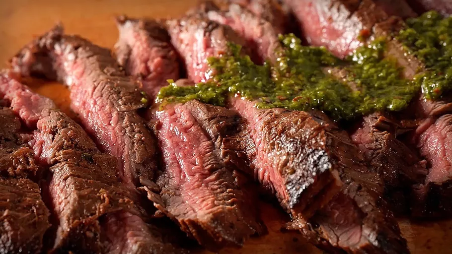

Carne Asada Marinade

Description
This carne asada marinade is our family's favorite — and I've tried many! A 24-hour soak in a spicy citrus and soy marinade ensures your flank steak will be perfectly tender when it comes off the grill.
What is carne asada?
Carne asada is a Mexican dish featuring steak that's marinated in a lime juice and seasonings mixture. It literally translates to "grilled meat," so the steak is traditionally grilled.
Ingredients
- ¾ cup orange juice
- ½ cup lemon juice
- ⅓ cup lime juice
- 1 bunch fresh cilantro, chopped
- ½ cup soy sauce
- 4 cloves garlic, minced
- 1 tablespoon chili powder
- 1 tablespoon ground cumin
- 1 tablespoon ground paprika
- 1 tablespoon ground black pepper
- 1 teaspoon finely chopped canned chipotle pepper
- 1 teaspoon dried oregano
- ½ cup olive oil
- 3 pounds flank steak